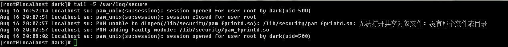

日誌服務
centos6開始 日誌服務商 rsyslog(以前是syslogd)
配置文件是 /etc/rsyslog.conf (以前是 /etc/syslog.conf)
常見日誌文件名
/var/log/cron //crontab的執行日誌
/var/log/dmesg //系統開機過程產生的各項信息
/var/log/lastlog //最近一次系統登錄相關信息
/var/log/maillog 或 /var/log/mail/* //記錄sendmail（SMTP 郵件發信協議）與dovecot(POP3 郵件接收協議)信息
/var/log/messages //幾乎系統發生的所有錯誤信息
/var/log/secure //基本上包含所有需要輸入帳號密碼的軟件
/var/log/wtmp /var/log/faillog //系統正確登錄和錯誤登錄信息 last命令便是分析的此二文件
/var/log/httpd/* /var/log/news/* /var/log/samba/* //針對不同的網絡服務
日誌一般格式
何時
何地
誰(服務名稱 或 進程 等)
何事
example

其最後一條日誌內容是
8月16日 20:08:02
在本機(localhost )
執行su命令(在pam_unix模塊中)
用戶dark獲取到root權限
日誌配置 /etc/rsyslog.conf
編輯 /etc/rsyslog.conf 可以修改rsyslog記錄的日誌保存位置
其格式為服務名[.=!]信息等級 位置
example mail.info /var/log/mylog (將mail服務產生的大於info等級的信息記錄到mylog)
syslog支持服務